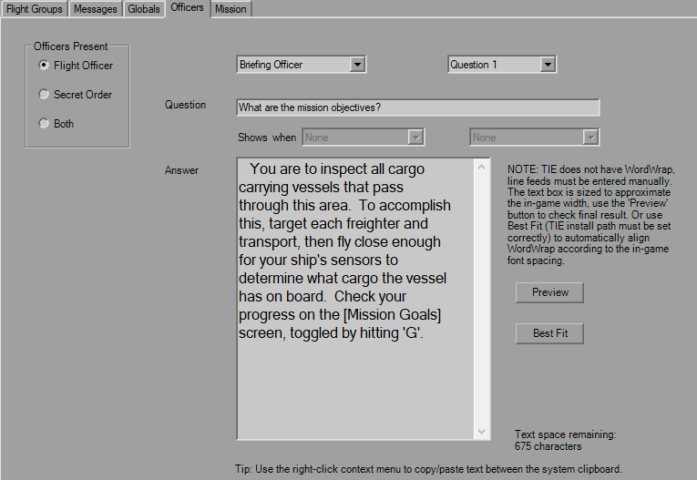

Briefing Officers

This tab controls who is present both before and after the mission. You have the simple Officers Present selection to start. Each question set is five per officer, both before and after. Use the drop-downs to select the question you wish to edit. The strings have no practical length limit, as I doubt anyone could take up over 65,000 characters.
The Facial Expression drop-down controls the appearance of the officers. Right now, YOGEME allows you to control the expression on a question-by-question basis. In the future, this may be reworked to allow page-by-page control, which is what's technically possible within TIE.
The Shows when drop-downs are for post-mission questions, this lets you have separate messages for successful or failed goals, however note you still only have five to work with. The Note next to the text box points out a limitation with the questions, in that you have to manually hit 'Enter'.
I've sized the box and font so you're *probably* okay if you can see everything, but double check anyway.
Using the "[ ]" brackets as shown in the image applies the green highlights in-game. The brackets will not appear, and are simply used as markers to be consistent with existing editors.
The 'Preview' button launches the Preview interface.
The interface behaves as it would in game: click the question to display the question how it should appear in-game, L-click "Page # of #" to flip forward and R-click to flip previous, or use the 'Previous/Next Page' buttons at the bottom. No edits can be performed in this interface, it is simply to double-check that you're not running off the screen. If somehow there is a corrupt character detected that the FONT resource does not have an image for, a red 'X' will be shown in the viewer.